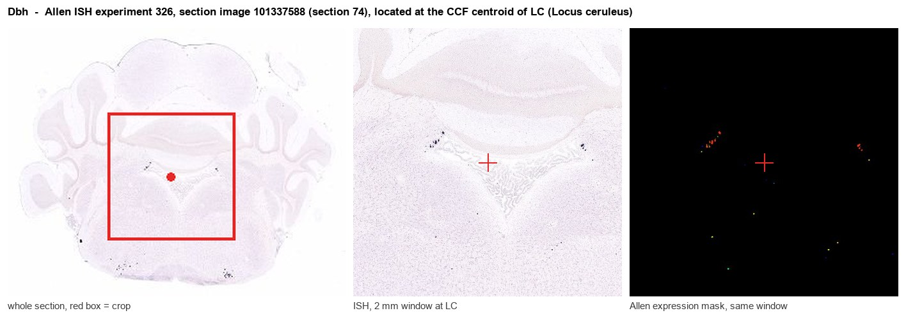

Dbh
Spatial tier: STRICT_EXCLUSIVE · Class: NEUROMODULATORY_SIGNAL · Top region: LC (Locus ceruleus) · Positive regions: 4/554
54.5Discovery Score
48.1Targetability Score
CEvidence grade C
What this means: Dbh: predicted fine-region profile is strict-exclusive, with 4 positive regions out of 554 (limit 12); direct spatial validation is required.
Function in LC: evidence, prediction, innovation
- Gene function
- Dbh encodes dopamine beta-hydroxylase, a copper- and ascorbate-dependent monooxygenase located inside synaptic vesicles of noradrenergic and adrenergic cells. It converts dopamine into noradrenaline and is the committed, rate-limiting step of noradrenaline synthesis. Its expression defines the noradrenergic phenotype and is the standard genetic handle for those neurons.
- Region function
- The locus ceruleus is the principal noradrenergic nucleus, with diffuse ascending and descending projections that set arousal and sleep-wake state, attention and behavioural flexibility, stress responses, and descending pain control.
- Published in this region
- direct Dbh is the canonical LC marker: Thomas et al. 1995 showed that Dbh-null mice lack noradrenaline entirely and die in utero unless dams are rescued pharmacologically, establishing the enzyme as indispensable for noradrenergic transmission. The Dbh locus is the basis of the Dbh-Cre and DBH-CreERT2 knock-in lines and PRSx8/DBH-promoter AAVs used in nearly all modern LC circuit studies; Carter et al. 2010 used DBH-driven optogenetics to show that LC firing rate directly controls sleep-to-wake transitions, and Schwarz et al. 2015 mapped the input-output organisation of these DBH+ neurons.
- Predicted function
- Prediction: Dbh in LC neurons determines whether they release noradrenaline or only dopamine; conditional Dbh deletion restricted to LC should preserve cells and firing but convert their output to dopamine, degrading arousal-linked cortical desynchronization, attentional performance and stress-induced anxiety while leaving some LC-dopamine-dependent hippocampal memory effects intact. DBH inhibitors such as nepicastat should cause similar state-dependent deficits acutely, and Dbh-Cre-driven chemogenetic activation should produce arousal, pupil dilation and anxiogenesis.
- Innovation
- ★☆☆☆☆ 1/5 Dbh is the defining marker and main genetic tool of the locus ceruleus, with decades of functional work.
- Tools
- Dbh-Cre knock-in (JAX 033951), DBH-CreERT2 (JAX 020074), GENSAT Tg(DBH-Cre) KH212 (MMRRC 036778-UCD), Dbh knockout mice, PRSx8/DBH-promoter and noradrenergic enhancer AAVs, anti-DBH antibodies, DBH inhibitor nepicastat, selective LC lesion with DSP-4.
- References
Direct evidence located at the region

Allen ISH experiment 326, section image 101337588 (section 74): the section that contains the CCF centroid of Locus ceruleus according to the Allen image-to-atlas alignment (reference_to_image), with a 2 mm window around that point. Left: whole section, red box = window. Middle: ISH signal. Right: Allen's expression-mask view of the same window. open this image in the Allen viewer
Look it up yourself: Allen Mouse Brain ISH for DbhAllen reference atlas: LC (structure 147)ABC Atlas MERFISH viewer(in the ABC Atlas choose dataset MERFISH-C57BL6J-638850-CCF, colour cells by gene "Dbh" or by parcellation_substructure "LC")All genes confined to LC + 3-D brain
Direct spatial evidence
MERFISH REGION LOCATOR

DIRECT ALLEN ISH

DIRECT ALLEN ISH

Regional expression figure

Predicted WMB × fine-CCF profile; not direct full-transcriptome spatial measurement.
Spatial profile
Evidence and specificity
- Evidence status
- PREDICTED_FINE
- Direct sources
- None; predicted localization only
- Exclusive threshold
- 12 positive regions out of 554
- Spatial specificity
- 0.511
- Top-region fraction
- 0.242
- Filter status
- PASS
Interpretation limits
- Cell-type-to-region projection is imputed expression, not direct spatial measurement.
- Adult reference atlases do not establish stability across age, sex, strain, state, or disease.
- Transcript abundance does not guarantee protein abundance or genetic-tool performance.